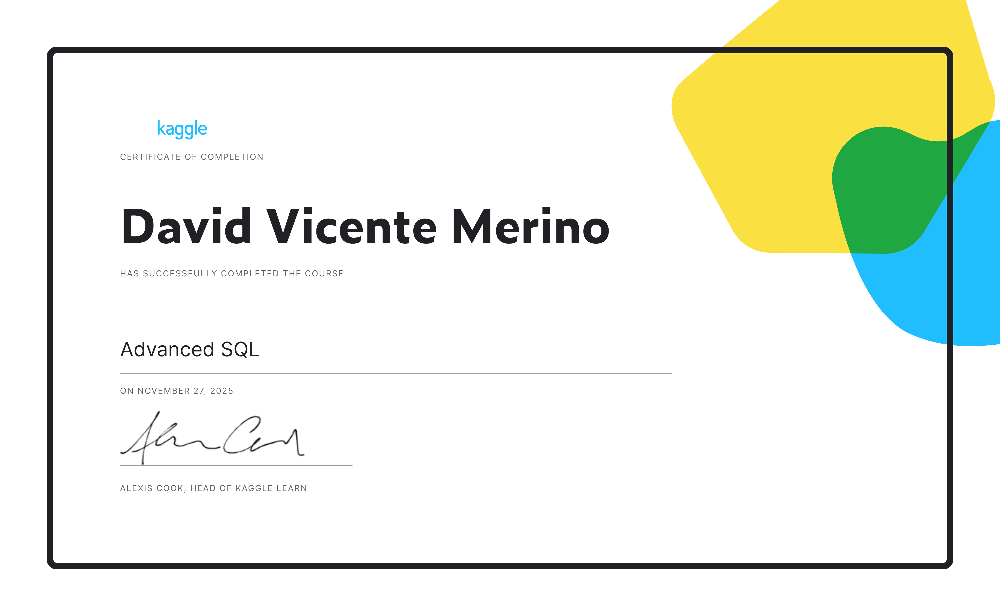
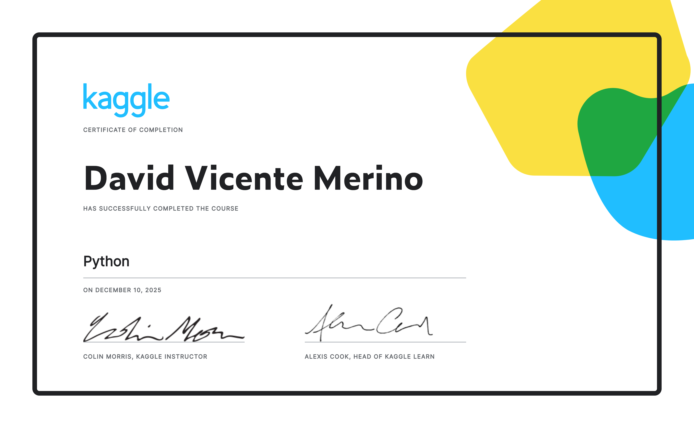
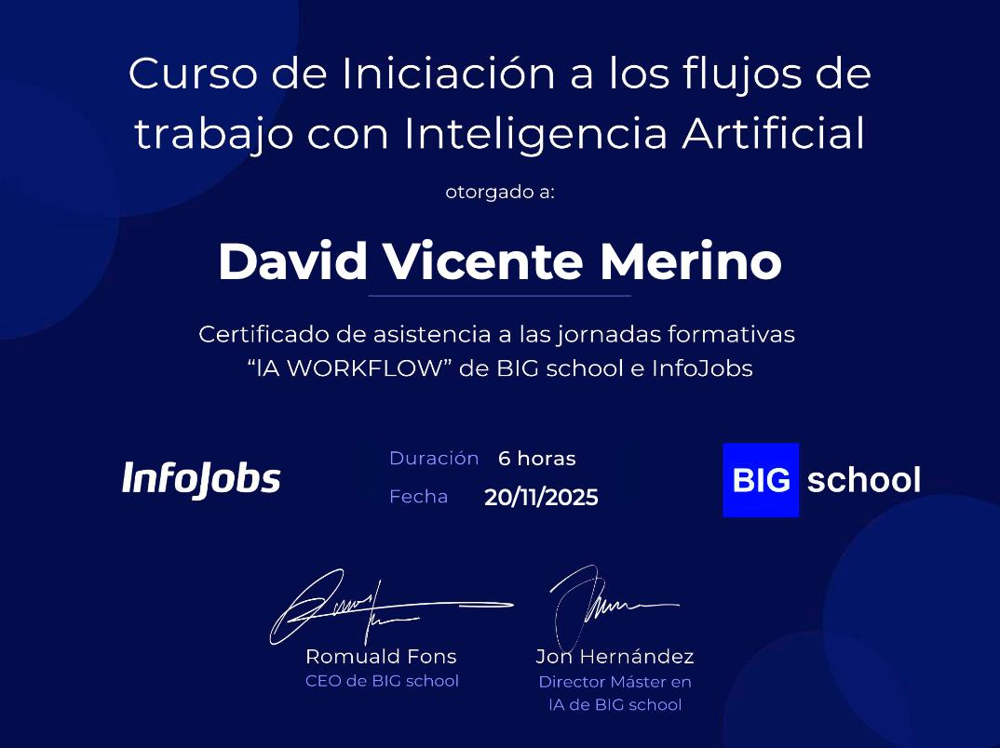

Grado en Ingeniería en Electrónica Industrial y Automática
Universidad de Valladolid
Construyo soluciones de datos para Supply Chain y entornos industriales. Pipelines en GCP, mentalidad AI First y mirada puesta en AI Platform Engineering.
Valladolid, España · Abierto a nuevas oportunidades01 — Perfil
Ingeniero en Electrónica Industrial y Automática con especialización en datos y cloud. Trabajo en la intersección entre datos, tecnología y operaciones industriales: desde la digitalización de procesos hasta la construcción de pipelines de datos en GCP. Actualmente cursando un Máster en Big Data & Business Intelligence y ampliando formación en Inteligencia Artificial aplicada a plataformas de datos.
02 — Formación
Universidad de Valladolid
Universidad de Valladolid · En curso
Español nativo · Inglés C1 · Francés B1
03 — Experiencia
Supply Chain
Desarrollo y mantenimiento de pipelines en GCP con BigQuery, Cloud Storage y Dataform. Diseño modelos Bronze/Silver/Gold, transformaciones SQL y controles de calidad. Optimizo consultas mediante particionado y clustering para mejorar rendimiento y eficiencia de costes, integrando datos maestros y soluciones SAP IBP/BTP con equipos funcionales.
Renault Group · HORSE
Análisis de datos con Power BI, Looker Studio y TIBCO Spotfire; mejora de documentación de maquinaria y migración de referencias de almacén en SAP S/4HANA. Colaboré con Google en el desarrollo de un agente de IA para mantenimiento de fábrica.
Local Supply Chain P.I. · HORSE
Digitalicé procesos de Supply Chain mediante aplicaciones Power Apps y automatizaciones en Python y PowerShell. Automaticé informes con Spotfire y VBA, ahorrando cinco horas semanales, y gestioné incidencias técnicas con un SLA de resolución del 85 %.
SEGULA Technologies · HORSE
Desarrollé scripts Python para analizar datos de producción y detectar desviaciones de calidad un 30 % más rápido. También trabajé con TIBCO Spotfire y creé herramientas internas con Power Apps y VBA para estandarizar el cumplimiento de normativas.
Empresa especializada en montaje e ingeniería eléctrica
Desarrollo de un proyecto eléctrico real para una comisaría de policía en Valladolid.
04 — Stack técnico
 GCP
GCP
 BigQuery
BigQuery
 Cloud Storage
Dataform
Cloud Run
Cloud Storage
Dataform
Cloud Run
 Python
Python
 SQL
SQL
 PowerShell
PowerShell
 VBA
VBA
 Power BI
Power BI
 Looker Studio
Looker Studio
 TIBCO Spotfire
TIBCO Spotfire
 SAP S/4HANA
SAP IBP
SAP BTP
SAP S/4HANA
SAP IBP
SAP BTP
 Power Apps
Power Apps
 Power Automate
Power Automate
 Git
Git
 Docker
Docker
 IA Generativa
IA Generativa
05 — Certificados
Formación en análisis de datos, programación e inteligencia artificial.







Los documentos originales con datos personales no se publican aquí. Las imágenes de certificados se muestran como referencia.
06 — Contacto
Abierto a nuevas oportunidades en Data Engineering, Analytics e Ingeniería de IA. Puedes escribirme directamente por LinkedIn o por correo electrónico.